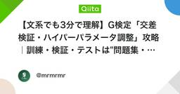
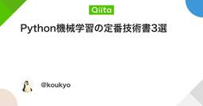

DeepLearningタグが付けられた新着記事 - Qiita
https://qiita.com/tags/deeplearning
DeepLearningに関する情報が集まっています。現在8333件の記事があります。また5173人のユーザーがDeepLearningタグをフォローしています。
フィード

畳み込み層（Convolutional Layer） Tech版
DeepLearningタグが付けられた新着記事 - Qiita
畳み込み層（Convolutional Layer）詳説概要畳み込み層（Convolutional Layer）は、CNN（Convolutional Neural Network）における重要な概念です。画像処理タスクで広く活用されています。数学的定義基本...
1時間前

Seedance 2.5 徹底検証：Image-to-Video世界1位（1,161 Elo）の30秒カメラ制御とDraft/Flash活用術
DeepLearningタグが付けられた新着記事 - Qiita
Kenji Tanaka · Inference Systems Writer · Published 2026-11-18TLDR Artificial Analysis Image-to-Video リーダーボードで世界総合第1位（1,161 Elo）を獲得した S...
3時間前

【小学5年生でもわかる】畳み込み層ってなに？
DeepLearningタグが付けられた新着記事 - Qiita
畳み込み層（Convolutional Layer）とは簡単に説明畳み込み層（Convolutional Layer）は、深層学習の画像処理で重要な概念です。どう動くのか視覚的な特徴を段階的に抽出していくプロセスです。わかりやすい例画像認識で「猫か犬か」...
7時間前

AdMultiplier Pricing & Credit Economics: 22 Credits/s Video Ad Remixing vs. Reshoots
DeepLearningタグが付けられた新着記事 - Qiita
Kenji Tanaka · Inference Systems Writer · Published 2026-11-18TLDR Calculate the exact unit economics of reference-led video ad multipl...
14時間前

コンテンツベースフィルタリング：詳細な技術解説
DeepLearningタグが付けられた新着記事 - Qiita
この記事は「技術版」です。初心者向けの説明は別記事をご覧ください。コンテンツベースフィルタリングの技術的解説アイテム特性ベクトルxでプロファイルw学習。スコア: w·x。テキストはTF-IDF、Word Embedding使用。線形回帰で学習。冷始問題に強い。多様性が低い課題。おすすめの学習リソースコンテンツベースフィルタリングの高度な内容を習得するため、複数のリソースの学習を推奨します。書籍『深層学習教科書 ディープラーニング G検定 公式テキスト 第2版』（JDLA監修）G検定受験者の定番。シラバスに沿って体系的に学べる公式テキスト。『ディープラーニングG検定 最強の合格テキスト［第2版］』（SBクリエイティブ）最新シラバス完全対応で、章末問題と模擬試験PDF付き。『スッキリわかる ディープラーニングG検定 テキスト&問題演習 第3版』（TAC出版）図解が豊富でわかりやすく、初学者でも取り組みやすい。『ディープラーニングG検定 問題集 第2版』（通称：赤本）実践的な問題演習に特化。新シラバスの範囲もカバー。WebサービスAI検定ドットネットG検定の練習問題を無料で解けるサイト。スキ
15時間前

生成AIのAPIは使っているが、中でニューラルネットワークやTransformerがどう動いているのか、コードで確かめたことがないエンジニアへ。Kerasの開発者が解説する一冊
DeepLearningタグが付けられた新着記事 - Qiita
生成AIのAPIを呼び出して、結果を受け取るところまでは動かせる。ただ、その中でニューラルネットワークやTransformerがどう動いているのかを、自分のコードで確かめたことはあまりない。『Pythonによるディープラーニングと生成AI・LLM』は、Kerasの開発者が、ディープラーニングと生成AIの背後にある概念を、コードファーストで解説した一冊だ。ベストセラー『Deep Learning with Python』が全面的に書き直され、Keras 3、PyTorch、JAXを網羅している。ディープラーニングの基礎と数学を押さえる1章でディープラーニングとは何かを整理し、2章でニューラルネットワークの数学的要素を扱う。3章では、TensorFlow、PyTorch、JAX、Kerasの位置づけを比べる。分類と回帰、機械学習の基礎とワークフロー4章は分類と回帰、5章は機械学習の基礎、6章は機械学習の普遍的なワークフローだ。7章ではKerasを深く理解する。ここまでで、モデルを作って評価する一連の流れを、コードで一通りたどれる。画像、時系列、テキストと、扱う対象を広げる8章以降は、画像分
15時間前

混同行列とは？基礎から応用までわかりやすく解説
DeepLearningタグが付けられた新着記事 - Qiita
混同行列とは分類モデルの予測結果を整理し、TP/FP/FN/TNを示す行列。機械学習やディープラーニングを学ぶ際に、非常に重要な概念です。基本的な定義混同行列（Confusion Matrix）は、分類モデルの予測結果を実際のラベルと比較した結果を示します。TP（真陽性）、FP（偽陽性）、FN（偽陰性）、TN（真陰性）から構成されます。詳しい説明と特徴マトリックスの構成予測正予測負実際正TPFN実際負FPTN導出される指標正確度（Accuracy）= (TP+TN)/(TP+TN+FP+FN)感度（Sensitivity/Recall） = TP/(TP+FN)特異度（Specificity） = TN/(TN+FP)解釈例医療診断で多数の偽陽性がある場合、特異度を重視する必要があります。実装上の注意点クラス不均衡への解釈正確度が高くても、少数クラスの予測が完全に外れていることがある→ 混同行列を詳しく見るコスト非対称への考慮誤陰性と誤陽性のコストが異なる場合を検討医療：見落としは危険 → 再現率重視G検定での出題傾向混同行列はG検定の頻出トピックです。シラバスに明記されており、基本的
1日前
【小学5年生でもわかる】混同行列ってなに？
DeepLearningタグが付けられた新着記事 - Qiita
混同行列ってなに？「どこで間違えたかを整理する」表のこと。かんたんな説明『この診断は正しかったか、間違ってたか』を表で整理します。『正しく診断できた』『間違って診断した』『見逃した』などが一目でわかります。日常生活での例え病気の検査で『陽性と判定された人』と『実際に病気の人』をくらべて『何人正しく判定されたか』を見る表のこと。もっと詳しく知りたい人へこのテーマについてもっと詳しく学ぶなら、技術版の記事がおすすめです！おすすめの学習リソース混同行列をもっと詳しく学ぶなら、下の書籍やWebサービスがおすすめです。書籍『深層学習教科書 ディープラーニング G検定 公式テキスト 第2版』（JDLA監修）G検定受験者の定番。シラバスに沿って体系的に学べる公式テキスト。まずはこの1冊から。『ディープラーニングG検定 最強の合格テキスト［第2版］』（SBクリエイティブ）最新シラバス完全対応で、章末問題と模擬試験PDF付き。公式テキストの補強に。『スッキリわかる ディープラーニングG検定 テキスト&問題演習 第3版』（TAC出版）図解が豊富でわかりやすく、初学者でも取り組みやすい。文系の方にも特におす
1日前

協調フィルタリング：詳細な技術解説
DeepLearningタグが付けられた新着記事 - Qiita
この記事は「技術版」です。初心者向けの説明は別記事をご覧ください。協調フィルタリングの技術的解説ユーザー-アイテム行列をm×nで表現。ユーザーベース、アイテムベース協調フィルタリング。行列分解(SVD等)でR≈U×V^T。暗黙的フィードバック対応。冷始問題がある。おすすめの学習リソース協調フィルタリングの高度な内容を習得するため、複数のリソースの学習を推奨します。書籍『深層学習教科書 ディープラーニング G検定 公式テキスト 第2版』（JDLA監修）G検定受験者の定番。シラバスに沿って体系的に学べる公式テキスト。『ディープラーニングG検定 最強の合格テキスト［第2版］』（SBクリエイティブ）最新シラバス完全対応で、章末問題と模擬試験PDF付き。『スッキリわかる ディープラーニングG検定 テキスト&問題演習 第3版』（TAC出版）図解が豊富でわかりやすく、初学者でも取り組みやすい。『ディープラーニングG検定 問題集 第2版』（通称：赤本）実践的な問題演習に特化。新シラバスの範囲もカバー。WebサービスAI検定ドットネットG検定の練習問題を無料で解けるサイト。スキマ時間にスマホで問題演習に
2日前

【文系でも3分で理解】G検定「交差検証・ハイパーパラメータ調整」攻略｜訓練・検証・テストは"問題集・模試・本番"で覚える
DeepLearningタグが付けられた新着記事 - Qiita
はじめにこんにちは。2026年1月のG検定に合格した、文系出身のエンジニアです。G検定の勉強をしていて、地味なのに意外と混乱したのが 「データの分け方」と「ハイパーパラメータの調整」 でした。「検証データとテストデータって何が違うの？」「グリッドサーチとランダムサーチ、どっちがどっち？」と、問題集で何度も迷った記憶があります。この記事では、文系の私が 「問題集・模試・本番」のたとえ で整理して、ようやく迷わなくなった覚え方を紹介します。注意: この記事はJDLA（日本ディープラーニング協会）の公式コンテンツではありません。筆者個人の学習経験に基づく非公式の情報共有で、合否を保証するものではありません。出題範囲などの最新情報は JDLA公式サイト でご確認ください。結論：3つのデータは「問題集・模試・本番」で覚える先に結論です。データの役割は、受験勉強にたとえるとスッキリします。データ受験勉強でいうと役割訓練データ問題集モデルが学習する（パラメータを決める）検証データ模試設定（ハイパーパラメータ）を調整するテストデータ本番の試験最終的な実力を一度だけ測るポイントは 「本番の問題で練習して
2日前

CNN（畳み込みニューラルネットワーク）とは？仕組み・構造・応用をわかりやすく解説
DeepLearningタグが付けられた新着記事 - Qiita
はじめに画像認識の分野で圧倒的な成果を上げてきたCNN（Convolutional Neural Network：畳み込みニューラルネットワーク）。スマホの顔認証から自動運転まで、私たちの身の回りで幅広く使われている技術です。この記事では、CNNの仕組み・構造・代表モデル・応用例を、数式をなるべく使わずに解説します。小学5年生でもわかるシンプルな説明はこちら👉 【小学5年生でもわかる】CNN（畳み込みニューラルネットワーク）ってなに？CNNとはCNNとは、画像などの空間的な構造を持つデータの処理に特化したニューラルネットワークです。通常のニューラルネットワーク（全結合層のみ）では画像の空間的な位置関係が失われてしまいますが、CNNは「畳み込み」という処理でその情報を保ったまま特徴を抽出できます。CNNの基本構造CNNは主に3種類の層で構成されます。1. 畳み込み層（Convolutional Layer）小さな**フィルタ（カーネル）**を画像上でスライドさせ、局所的な特徴（エッジ、テクスチャなど）を抽出する層です。フィルタのサイズ（例：3×3、5×5）とストライド（移動幅）を指定する
2日前

SAEW
DeepLearningタグが付けられた新着記事 - Qiita
UTFIIUIU https://veriftools.lifeytyiuduh https://veriftools.hkdgyuuiyho https://veriftools.biz
2日前

【小学5年生でもわかる】CNN（畳み込みニューラルネットワーク）ってなに？
DeepLearningタグが付けられた新着記事 - Qiita
CNNってなに？CNNは、コンピュータに「目」をあげる技術です。たとえば、あなたが犬と猫の写真を見分けるとき、耳の形やヒゲの長さをなんとなく見ていますよね？CNNもまったく同じことをやっています。写真を小さなパーツに分けて、「ここに耳がある」「ここに目がある」と特徴を探して、最後に「これは犬！」と答えを出します。どうやって見ているの？虫めがねで見る（畳み込み）：写真の一部分だけをじっくり見て、「線がある」「丸がある」といった特徴を見つけますざっくりまとめる（プーリング）：細かい情報を「だいたいこんな感じ」とまとめます。少しぐらい位置がずれても大丈夫になります答えを出す（全結合）：見つけた特徴を全部つなげて、「犬」か「猫」か判断しますCNNがすごいところスマホの顔認証、自動運転の「人が歩いてるから止まろう」、病院のレントゲン写真から病気を見つけるのも、全部CNNの仲間が活躍しています。専門的な仕組みや関連技術を詳しく知りたい方はこちら👉 CNN（畳み込みニューラルネットワーク）とは？仕組み・構造・応用をわかりやすく解説おすすめの学習リソースCNNのような画像認識の技術は、図を見ながら学ぶ
2日前

クラスタリングとは？基礎から応用までわかりやすく解説
DeepLearningタグが付けられた新着記事 - Qiita
クラスタリングとは教師なし学習で、似ているデータを自動的にグループに分ける手法。機械学習やディープラーニングを学ぶ際に、非常に重要な概念です。基本的な定義クラスタリング（Clustering）は、教師なし学習の代表的な手法で、データを複数のグループ（クラスタ）に分割します。k-means、階層的クラスタリング、DBSCAN などが知られています。詳しい説明と特徴k-meansの流れk個の初期中心を選択各点を最近傍のクラスタに割り当て新しい中心を計算収束まで繰り返し最適なクラスタ数の決定エルボー法（Elbow Method）シルエット係数（Silhouette Score）カルマン・ハリガン指数（Calinski-Harabasz Index）その他の手法階層的クラスタリング（完全結合、単結合）DBSCAN（密度ベース）ガウス混合モデル（確率的）実装上の注意点スケーリングクラスタリングは特徴量スケールに敏感常に正規化・標準化を先に実施初期値の設定k-meansは局所最適に陥りやすいk-means++初期化を推奨距離尺度の選択ユークリッド距離、マンハッタン距離、余弦類似度など→ データの特
3日前
そろそろ本気で誤差逆伝播法を理解しようじゃないか
DeepLearningタグが付けられた新着記事 - Qiita
本日のメニューはこちら「説明見るたびに誤差逆伝播法を知った気になるけど、やっぱりよくわかってない。。。」常々こんな悩み（？）を持っていましたが、さすがに煩わしいので力技で解決することにしました。「ちょっと面白そう？」と思った方は、ぜひ覗いていってください。こんにちは。秋田県のIT企業、北日本コンピューターサービスのR&Dチーム「AUL（アウル）」に所属しています。トラフクロウです。ディープラーニングのキモとなるアルゴリズムに誤差逆伝播法（バックプロパゲーション） ってあるじゃないですか。AI関連の本を読んでいると結構な頻度で遭遇するので、ちょくちょく読み直す機会があるのですが、そのたびに「なんでこの式を使うのかイマイチよくわからないな」となります。別にこのアルゴリズムの中身がわからなくて実務上困ることはないのですが、毎回調べ直すのもいい加減煩わしいので決着をつけることにしました。複雑な式をイメージできるようになるには手でゴリゴリ計算するのが一番です。というわけで、今回の記事では低次元の多層パーセプトロンモデルを考えて、そのパラメーターの更新式をパワーで求めていこうと思います。数式がメイ
3日前

【小学5年生でもわかる】クラスタリングってなに？
DeepLearningタグが付けられた新着記事 - Qiita
クラスタリングってなに？「似ているもの同士をグループ分けする」方法のこと。かんたんな説明学校で席替えをするとき、友達同士で集まってグループを作りますよね。それと同じで、似ている者同士が自動的にグループに分かれる感じです。日常生活での例えお菓子の詰め合わせが届いたとき、『チョコレート系』『ガム系』『グミ系』という感じに、自動的に分かれていく感じです。もっと詳しく知りたい人へこのテーマについてもっと詳しく学ぶなら、技術版の記事がおすすめです！おすすめの学習リソースクラスタリングをもっと詳しく学ぶなら、下の書籍やWebサービスがおすすめです。書籍『深層学習教科書 ディープラーニング G検定 公式テキスト 第2版』（JDLA監修）G検定受験者の定番。シラバスに沿って体系的に学べる公式テキスト。まずはこの1冊から。『ディープラーニングG検定 最強の合格テキスト［第2版］』（SBクリエイティブ）最新シラバス完全対応で、章末問題と模擬試験PDF付き。公式テキストの補強に。『スッキリわかる ディープラーニングG検定 テキスト&問題演習 第3版』（TAC出版）図解が豊富でわかりやすく、初学者でも取り組み
3日前
CLIP：技術解説
DeepLearningタグが付けられた新着記事 - Qiita
CLIP：技術解説概要Contrastive learningで画像テキスト表現を学習するマルチモーダルモデル。詳細このトピックの詳細については、G検定公式教材を参照してください。わかりやすい初心者向け解説はキッズ版の記事をご覧ください。おすすめの学習リソースG検定対策の学習に役立つリソースを紹介します。書籍『深層学習教科書 ディープラーニング G検定 公式テキスト 第2版』（JDLA監修）G検定受験者の定番。シラバスに沿って体系的に学べる公式テキスト。まずはこの1冊から。『ディープラーニングG検定 最強の合格テキスト［第2版］』（SBクリエイティブ）最新シラバス完全対応で、章末問題と模擬試験PDF付き。公式テキストの補強に。『スッキリわかる ディープラーニングG検定 テキスト&問題演習 第3版』（TAC出版）図解が豊富でわかりやすく、初学者でも取り組みやすい。文系の方にも特におすすめ。『ディープラーニングG検定 問題集 第2版』（通称：赤本）実践的な問題演習に特化。新シラバスの範囲もカバーしており、仕上げに最適。💡 G検定の書籍は定価だとそこそこしますが、某フリマアプリで中古を探すと
3日前
【小学5年生でもわかる】CLIPってなに？
DeepLearningタグが付けられた新着記事 - Qiita
CLIPをわかりやすく解説画像とテキストを同じ空間で理解し、関連付けるモデルです。より詳しい技術解説は技術版の記事をご覧ください。おすすめの学習リソースG検定対策の学習に役立つリソースを紹介します。書籍『深層学習教科書 ディープラーニング G検定 公式テキスト 第2版』（JDLA監修）G検定受験者の定番。シラバスに沿って体系的に学べる公式テキスト。まずはこの1冊から。『ディープラーニングG検定 最強の合格テキスト［第2版］』（SBクリエイティブ）最新シラバス完全対応で、章末問題と模擬試験PDF付き。公式テキストの補強に。『スッキリわかる ディープラーニングG検定 テキスト&問題演習 第3版』（TAC出版）図解が豊富でわかりやすく、初学者でも取り組みやすい。文系の方にも特におすすめ。『ディープラーニングG検定 問題集 第2版』（通称：赤本）実践的な問題演習に特化。新シラバスの範囲もカバーしており、仕上げに最適。💡 G検定の書籍は定価だとそこそこしますが、某フリマアプリで中古を探すとかなり安く手に入ります。試験対策の書籍は内容が大きく変わるものでもないので、中古で十分です。WebサービスA
3日前

Kling 4.0 vs Kling 4.0 Flash 徹底比較：10キーフレーム軌道制御・30秒生成の上限・クレジット経済性
DeepLearningタグが付けられた新着記事 - Qiita
Daniel Okonkwo · Senior ML Engineer · Published 2026-11-18TLDR フルモデル Kling 4.0（最大30秒・1080p/4K・最大10キーフレーム制御・15 Omni Reference）と高速蒸留モデル Kling 4.0 Flash（最大20秒・720p SDR上限・中間キーフレーム非対応）の仕様差、コミュニティ実測、クレジット最適化計算を整理します。30秒・10キーフレーム制御と20秒・720p高速推論のアーキテクチャ境界フルモデルの Kling 4.0 は最大10個の空間キーフレーム（開始1＋中間8＋終了1）と15個のOmni Reference入力を用いて最長30秒の1080p動画を生成できる一方、Kling 4.0 Flash は中間キーフレーム補間を省略し出力を最大20秒・720p SDRに制限することで推論速度とコスト効率を高めています——したがって、本番のカメラ軌道固定にはフル版、初期のプロンプト探索にはFlash版を組み合わせる2段階パイプラインが最も合理的です。2026年後半の動画生成パイプラインにおい
3日前

分類問題とは？基礎から応用までわかりやすく解説
DeepLearningタグが付けられた新着記事 - Qiita
分類問題とはカテゴリカルなラベル（クラス）への分類を行う予測タスク。機械学習やディープラーニングを学ぶ際に、非常に重要な概念です。基本的な定義分類問題（Classification）は、入力をあらかじめ定義されたカテゴリに割り当てるタスクです。二値分類と多値分類に分けられ、ロジスティック回帰や決定木などが使われます。詳しい説明と特徴二値分類と多値分類二値分類例：迷惑メール判定、病気診断ロジスティック回帰が標準的多値分類例：画像分類（犬、猫、鳥...）ソフトマックス関数を使用代表的なモデルロジスティック回帰SVMナイーブベイズ決定木ニューラルネットワーク不均衡への対応クラス重み付けオーバーサンプリング/アンダーサンプリングSMOTE実装上の注意点閾値の選択特に二値分類では、デフォルト（0.5）が最適とは限らないPR曲線やROC曲線で最適閾値を探索クラス不均衡クラスウェイト、コスト関数の調整、サンプリング手法を組み合わせ確率の較正予測確率が実際の確率と一致しているか確認CalibrationCurveで評価G検定での出題傾向分類問題はG検定の頻出トピックです。シラバスに明記されており、基本
4日前

【文系合格者が分析】G検定は「丸暗記」と「検索頼み」が通用しにくい？｜2026年の合格体験記から見えた傾向と対策
DeepLearningタグが付けられた新着記事 - Qiita
はじめにこんにちは。2026年1月のG検定に合格した、文系出身のエンジニアです。最近Qiitaで2026年に受験した方の合格体験記を読んでいて、気になる共通点がありました。それは 「問題集を回したのに、本番は思ったより手ごたえがなかった」 という声です。私自身も本番で「あれ、テキストで見た聞き方と違う…」と焦った経験があります。そこでこの記事では、合格体験記を読み比べて見えた 「最近のG検定で通用しにくい勉強法」 と、文系の私が実際にやって効果を感じた対策をまとめます。注意: この記事はJDLA（日本ディープラーニング協会）の公式コンテンツではありません。筆者個人の経験と、公開されている体験記を読んだ感想に基づく非公式の情報共有で、合否を保証するものではありません。出題範囲や試験形式の最新情報は必ず JDLA公式サイト でご確認ください。結論：「用語→意味」の1対1暗記だけでは足りなくなっている先に結論です。体験記を読み比べると、通用しにくくなっている勉強法は大きく3つでした。通用しにくい勉強法本番で起きがちなこと代わりにやること用語と意味の1対1暗記説明文から用語を選ぶ・用語同士を比
4日前

中国語の部屋とは？AIと理解の関係をわかりやすく解説
DeepLearningタグが付けられた新着記事 - Qiita
はじめに中国語の部屋論証（Chinese Room Argument）は、1980年に哲学者ジョン・サールが提唱した思考実験です。AIが形式的に正確な応答をしても、それが実際の理解を意味するのかという根本的な問いを投げかけます。定義中国語の部屋論証は以下のシナリオです：主人公：中国語を理解しない人物設定：密閉された部屋に、中国語の記号操作ルール（シンボル・マニピュレーション・ルール）の書かれた書物がある状況：外部から中国語の質問が送られてくる対応：ルール本に従って、機械的に中国語で正確に応答する結果：外部の観察者には、部屋の中で中国語が理解されているように見える詳細説明サールの主張形式的処理は理解ではないコンピュータは記号の形式的操作しかできないシンボル操作だけでは、シンボルの意味（セマンティクス）は生まれないしたがって、シンボル操作能力 ≠ 理解能力強いAIへの批判「プログラム実行により心的状態が生じる」という強いAI仮説は誤りAIが複雑な計算ができても、それは意識や理解ではない論証の構造ステップ内容1AIは形式的ルール（プログラム）に従って記号処理を行う2シンボル操作のみで意味理解
4日前

【小学5年生でもわかる】中国語の部屋ってなに？
DeepLearningタグが付けられた新着記事 - Qiita
中国語の部屋とは、「形の上では正しく見えるけど、本当には理解していない」ということを説明する例え話です。想像してみてください。あなたが中国語の字の意味をぜんぜん知らないとします。でも、大きな本を持っていて、その本には「こういう字が来たら、こう答えなさい」と書いてあります。中国語の質問が窓から来ます。あなたはその本に従って、正しい中国語の答えを返します。質問者から見ると「この部屋には中国語がわかる人がいる！」と思います。でも、あなたは中国語の意味を何も理解していません。ただ本の指示に従っているだけです。AIも同じかもしれません。正しい答えを出しているように見えても、本当は『意味』を理解していないのでは？ということを考えさせてくれる話です。専門的な仕組みや関連技術を詳しく知りたい方はこちら👉 中国語の部屋とは？AIと理解の関係をわかりやすく解説おすすめの学習リソース正しい答えが出ていても、本当に『理解している』わけではないかもしれない、という考え方ですね。書籍『深層学習教科書 ディープラーニング G検定 公式テキスト 第2版』（JDLA監修）G検定受験者の定番。シラバスに沿って体系的に学べ
4日前

線形アテンションの進化は「薄める・読む・書く」を1つずつ足した歴史：Linear から KDA までを連絡帳で理解する
DeepLearningタグが付けられた新着記事 - Qiita
最近の LLM では、文脈が長くなっても推論のメモリが増えない線形アテンションの仲間が使われ始めています（Kimi Linear の KDA など）。ただ、Linear・DeltaNet・Gated DeltaNet・KDA と名前が多く、何が違うのか追いにくいです。この記事では、Softmax Attention から KDA までの流れを、スマホの連絡帳を例にしてたどります。線形アテンションの進化は、「薄める・読む・書く」の部品を1つずつ足した歴史です。取り上げる論文Softmax Attention：Vaswani et al.（NeurIPS 2017）Linear Attention：Katharopoulos et al.（ICML 2020）DeltaNet：Schlag et al.（ICML 2021）、Yang et al.（NeurIPS 2024）Gated DeltaNet：Yang et al.（ICLR 2025）KDA：Kimi Team, "Kimi Linear"（技術レポート、2025）記号の基準：Hatamizadeh et al., "Gate
5日前

Python機械学習の定番技術書3選
DeepLearningタグが付けられた新着記事 - Qiita
はじめに数年前、自分は社内のレコメンド機能の改善を任された。scikit-learn のドキュメントを読みながら特徴量を作り、GridSearchCV を回し、なんとか動くものは出せた。問題はその後だ。オフライン評価の数字が伸び悩んだとき、データを増やすべきか、モデルを変えるべきか、そもそも評価の切り方が間違っているのか、自分には判断の軸がなかった。そのときに頼ったのが、検索で出てくる記事の断片だった。目の前のエラーは消える。けれど次の似た場面で、また同じように検索から始めることになる。再現性のある判断ができていなかった。腰を据えて体系的な本を読み直したのは、それがきっかけだった。読んでみて分かったのは、順番が効くということ。手を動かす本から入り、詰まったところで理論書に戻り、最後に機械学習より一段広い枠組みを眺めると、それまで別々だった知識がつながってくる。この記事では、その順序で3冊を紹介する。どれも長く読まれている定番で、いま読んでも古びていない。1冊ずつ、何が書かれていて、どんな場面で効くのかを書いていく。① scikit-learn、Keras、TensorFlowによる実践
5日前

AI学習ロードマップ
DeepLearningタグが付けられた新着記事 - Qiita
本記事は、これからAIを学ぶ皆さんの少しでもお役に立てばと思い、筆者自身がこれまでのモデル検証やローカルLLM運用、AIエージェント開発を通じて試行錯誤してきた経験をもとに、「この順番で積み上げれば迷わない」と実感できた道筋を一つのロードマップとして整理したものです。AI技術を学び始めると、誰もが一度は同じ分岐路で立ち止まります。「いきなり最新のAIエージェントやLLMのAPIから触るべきか、それとも高校・大学数学やPythonの基礎から順番に積み上げるべきか」という悩みです。自分自身の学び直しや周囲の開発支援を通じて痛感するのは、 極端なボトムアップも極端なトップダウンも途中で失速しやすい という事実です。線形代数の厳密な証明を1冊終える前に燃え尽きる人もいれば、仕組みを知らないままエージェント基盤を組んでコンテキスト崩壊やデータリークの原因が追えなくなる人も少なくありません。必要なのは完璧主義ではなく、「今の自分がどの層を学んでいて、それが上の層でどう使われるか」を見渡せる地図です。2026年現在の最新エコシステム（GPT-6・Claude 5・Gemini 4世代のクローズドモデ
5日前

双方向RNN Tech版
DeepLearningタグが付けられた新着記事 - Qiita
双方向RNN詳説概要双方向RNNは、RNN（Recurrent Neural Network）における重要な技術です。系列データ処理の様々なタスクで活用されています。数学的定義再帰構造時刻$t$の隠れ状態は以下で定義されます：$$h_t = \sigma(W_{hx} x_t + W_{hh} h_{t-1} + b_h)$$ここで：$x_t$：$t$時刻の入力$h_t$：$t$時刻の隠れ状態$W$：学習可能な重み行列$\sigma$：活性化関数出力層最終的な出力は隠れ状態から得られます：$$y_t = W_{hy} h_t + b_y$$計算複雑性要素複雑性時間計算量$O(T \times n^2)$空間計算量$O(T \times n)$パラメータ数$O(n^2)$G検定出題ポイント系列データ処理の基礎勾配消失問題各層の役割実践的応用初心者向けの説明は「双方向RNN - Kids記事」をご覧ください。おすすめの学習リソース【双方向RNNの詳しい技術解説です。数学的定義と実装方法まで網羅しています】書籍『深層学習教科書 ディープラーニング G検定 公式テキスト 第2版』（JDLA監修
6日前

【文系でも3分で理解】G検定「自己教師あり学習・基盤モデル」攻略｜BERT・SimCLR・MAEは「自作の穴埋めドリル」で覚える
DeepLearningタグが付けられた新着記事 - Qiita
はじめにこんにちは。2026年1月のG検定に合格した、文系出身のエンジニアです。G検定の勉強をしていて、「自己教師あり学習」という言葉に引っかかった経験はありませんか？「教師あり？教師なし？……自己教師あり？？」と、私は最初この名前だけで混乱しました。しかもこの分野は、BERT・GPT・SimCLR・MAE・基盤モデル・スケーリング則……と、生成AI・LLMの話とつながるキーワードが一気に出てくるところ。逆に言えば、ここを押さえると新しめの分野がまとめて整理できます。この記事では、文系の私が「この覚え方でスッと入った」というたとえ話と、試験前に見返せる用語表をセットでまとめます。注意: この記事はJDLA（日本ディープラーニング協会）の公式コンテンツではありません。筆者個人の経験に基づく非公式のまとめで、合格を保証するものではありません。出題範囲は最新のシラバス等でご確認ください。結論：自己教師あり学習は「穴埋めドリルを自分で作る勉強法」まず一言でいうと、データの一部を隠して「隠した部分を当てる問題」を自分で作り、それを解きながら学ぶ方法です。私は「教科書の文章を自分で黒塗りして、穴埋
6日前

【小学5年生でもわかる】双方向RNNってなに？
DeepLearningタグが付けられた新着記事 - Qiita
双方向RNNとは簡単に説明双方向RNNは、系列データ（時間的に並ぶデータ）を処理する際に使われるニューラルネットワークです。アナロジー：文を読む脳文を読む時、前の単語を「覚えている」状態で次の単語を読みますよね。双方向RNNもそのような「記憶」の仕組みを持っています。使用例機械翻訳：「私は東京に」→「I am in Tokyo」テキスト生成：「次の文字を予測する」音声認識：音声信号を単語に変換大事なポイント順序が重要：データの並ぶ順序が意味を持つ記憶を保つ：前の情報を使って次の予測をする長期依存の処理：多くの時刻前の情報も活用さらに詳しく知りたい方は、「双方向RNN - Tech記事」をご覧ください。おすすめの学習リソース【双方向RNNを子ども向けに分かりやすく解説した記事です。初心者向け学習をお勧めします】書籍『深層学習教科書 ディープラーニング G検定 公式テキスト 第2版』（JDLA監修）G検定受験者の定番。シラバスに沿って体系的に学べる公式テキスト。まずはこの1冊から。『ディープラーニングG検定 最強の合格テキスト［第2版］』（SBクリエイティブ）最新シラバス完全対応で、章末問
6日前

論文まとめ：SuperMimic: Scaling Humanoid Whole-Body Control with One Differentiable World Model
DeepLearningタグが付けられた新着記事 - Qiita
はじめにCoRL 2026 から以下[1] Q. Liao, et. al. SuperMimic: Scaling Humanoid Whole-Body Control with One Differentiable World Model. CoRL 2026の論文のまとめarXiv：https://arxiv.org/abs/2610.28480プロジェクトページ：https://supermimic.github.io/1. 概要UC BerkeleyのチームがCoRL2026で発表したヒューマノイドロボットの全身運動制御に関する論文（下図の左側のようなタスク）全身運動制御を効率的に学習するために、1つの微分可能なWorld Modelを用いたModel-Based Reinforcement Learning（MBRL） を提案ロボットの状態遷移をWorld Modelで学習し、予測された未来の状態と報酬から、Backpropagation Through Time（BPTT）によって制御Policyを最適化するこれにより,NVIDIAの SONIC が128基のGPUを7
6日前

バイアスとバリアンスとは？基礎から応用までわかりやすく解説
DeepLearningタグが付けられた新着記事 - Qiita
バイアスとバリアンスとはモデルの誤差を説明する2つの要素：偏りと変動性。機械学習やディープラーニングを学ぶ際に、非常に重要な概念です。基本的な定義バイアスは真値と予測値の期待値の差を、バリアンスは予測値の分散を表します。この二者のトレードオフはバイアス・バリアンス分解として知られ、全体の予測誤差を説明します。詳しい説明と特徴数式による分解総誤差 = バイアス² + バリアンス + 既約誤差バイアスを減らす方法より複雑なモデルを使用特徴量エンジニアリングを充実ハイパーパラメータ調整バリアンスを減らす方法訓練データを増加正則化の強化アンサンブル学習トレードオフの視点モデル複雑度が増すと、バイアスは減りますが、バリアンスは増えます。実装上の注意点診断方法訓練曲線を描く：訓練誤差と検証誤差の差が大きい → 高バリアンス（過学習）両者が高い → 高バイアス（過小適合）対策高バイアス → モデル複雑度↑、特徴量↑高バリアンス → データ↑、正則化↑、モデル複雑度↓G検定での出題傾向バイアスとバリアンスはG検定の頻出トピックです。シラバスに明記されており、基本的な理解が問われることが多いです。以下の
6日前

【GI理論 番外編】Gluzman氏の定規（計量）のないStrategic Manifoldは、GI理論の経営環境多様体に組み込めるか？ ── フィッシャー計量で人間の専門家の座標を測る
DeepLearningタグが付けられた新着記事 - Qiita
はじめにこの記事は、本稿執筆者が提案する 「ジオメトリック・インテリジェンス理論」 と、Gluzman 氏の Strategic Manifold（戦略多様体論） との 関係を考える記事 です。ジオメトリック・インテリジェンス理論 は、位相幾何学、微分幾何学、多様体論を、経営環境の分析や政策環境の分析に応用する理論です。Strategic Manifold は、同じ多様体（manifold）という数学のことばを使って、歴史上の有名な軍事指導者や国家が取った戦争の戦略・戦術や、国家の対外的な紛争を、4つの座標軸を持つ空間の中に整理して位置づける議論です。本稿執筆者の関心 は、次の点にあります。GI理論は、社会経済データから、VAE（変分オートエンコーダ）などを使って、計算機の上に可微分多様体（differentiable manifold）を作ります。この多様体には、距離と曲がり方を測るものさし（計量、metric）が定義されていて、微分の計算ができます。一方、Gluzman 氏の Strategic Manifold には、ものさしが定義されていないため、距離や曲がり方を計算できません
6日前
【小学5年生でもわかる】バイアス・バリアンスってなに？
DeepLearningタグが付けられた新着記事 - Qiita
バイアスとバリアンスってなに？「外しやすさ」と「ぶれやすさ」のトレードオフのこと。かんたんな説明矢を的に射る時、いつも左にズレて当たるのは『バイアス』。毎回違うところに当たるのは『バリアンス』。両方を減らすのが目標です。日常生活での例えダーツで『いつも同じ場所に外れる』のと『毎回違うところに外れる』のは別の問題で、別の対策が必要ですよね。もっと詳しく知りたい人へこのテーマについてもっと詳しく学ぶなら、技術版の記事がおすすめです！おすすめの学習リソースバイアスとバリアンスをもっと詳しく学ぶなら、下の書籍やWebサービスがおすすめです。書籍『深層学習教科書 ディープラーニング G検定 公式テキスト 第2版』（JDLA監修）G検定受験者の定番。シラバスに沿って体系的に学べる公式テキスト。まずはこの1冊から。『ディープラーニングG検定 最強の合格テキスト［第2版］』（SBクリエイティブ）最新シラバス完全対応で、章末問題と模擬試験PDF付き。公式テキストの補強に。『スッキリわかる ディープラーニングG検定 テキスト&問題演習 第3版』（TAC出版）図解が豊富でわかりやすく、初学者でも取り組みやす
6日前

機械学習モデルの量子化（Quantization）徹底解説：高速推論と軽量化を実現
DeepLearningタグが付けられた新着記事 - Qiita
機械学習モデルの量子化（Quantization）徹底解説：高速推論と軽量化を実現課題・背景近年、ディープラーニングモデルは目覚ましい進化を遂げ、その性能向上と引き換えにモデルの規模は飛躍的に増大しています。数十億ものパラメータを持つモデルも珍しくなくなり、これに伴い、モデルの推論時に要求される計算リソースとメモリフットプリントも膨大になっています。この巨大なモデルサイズと計算負荷は、特に以下のような実務上の課題を引き起こします。エッジデバイスへのデプロイ制約: スマートフォン、IoTデバイス、組み込みシステムなど、計算能力やメモリ、電力供給が限られた環境では、大規模モデルの動作は困難です。リアルタイム推論の要求: 自動運転、高頻度取引、リアルタイム画像処理など、ミリ秒単位の応答性が求められるアプリケーションでは、推論遅延が許容されません。クラウドインフラコストの増大: データセンターでの大規模モデル運用は、高性能なGPUインスタンスを必要とし、運用コストを押し上げます。ネットワーク帯域の消費: モデルファイル自体が大きいと、デプロイやアップデート時の転送に時間がかかり、ネットワーク負
7日前
BERT：技術解説
DeepLearningタグが付けられた新着記事 - Qiita
BERT：技術解説概要双方向のTransformerを用いた事前学習言語モデル。詳細このトピックの詳細については、G検定公式教材を参照してください。わかりやすい初心者向け解説はキッズ版の記事をご覧ください。おすすめの学習リソースG検定対策の学習に役立つリソースを紹介します。書籍『深層学習教科書 ディープラーニング G検定 公式テキスト 第2版』（JDLA監修）G検定受験者の定番。シラバスに沿って体系的に学べる公式テキスト。まずはこの1冊から。『ディープラーニングG検定 最強の合格テキスト［第2版］』（SBクリエイティブ）最新シラバス完全対応で、章末問題と模擬試験PDF付き。公式テキストの補強に。『スッキリわかる ディープラーニングG検定 テキスト&問題演習 第3版』（TAC出版）図解が豊富でわかりやすく、初学者でも取り組みやすい。文系の方にも特におすすめ。『ディープラーニングG検定 問題集 第2版』（通称：赤本）実践的な問題演習に特化。新シラバスの範囲もカバーしており、仕上げに最適。💡 G検定の書籍は定価だとそこそこしますが、某フリマアプリで中古を探すとかなり安く手に入ります。試験対策
7日前
【小学5年生でもわかる】BERTってなに？
DeepLearningタグが付けられた新着記事 - Qiita
BERTをわかりやすく解説テキストの意味を双方向で理解する学習方法です。より詳しい技術解説は技術版の記事をご覧ください。おすすめの学習リソースG検定対策の学習に役立つリソースを紹介します。書籍『深層学習教科書 ディープラーニング G検定 公式テキスト 第2版』（JDLA監修）G検定受験者の定番。シラバスに沿って体系的に学べる公式テキスト。まずはこの1冊から。『ディープラーニングG検定 最強の合格テキスト［第2版］』（SBクリエイティブ）最新シラバス完全対応で、章末問題と模擬試験PDF付き。公式テキストの補強に。『スッキリわかる ディープラーニングG検定 テキスト&問題演習 第3版』（TAC出版）図解が豊富でわかりやすく、初学者でも取り組みやすい。文系の方にも特におすすめ。『ディープラーニングG検定 問題集 第2版』（通称：赤本）実践的な問題演習に特化。新シラバスの範囲もカバーしており、仕上げに最適。💡 G検定の書籍は定価だとそこそこしますが、某フリマアプリで中古を探すとかなり安く手に入ります。試験対策の書籍は内容が大きく変わるものでもないので、中古で十分です。WebサービスAI検定ドッ
7日前
Beam Search Tech版
DeepLearningタグが付けられた新着記事 - Qiita
Beam Search詳説概要Beam Searchは、RNN（Recurrent Neural Network）における重要な技術です。系列データ処理の様々なタスクで活用されています。数学的定義再帰構造時刻$t$の隠れ状態は以下で定義されます：$$h_t = \sigma(W_{hx} x_t + W_{hh} h_{t-1} + b_h)$$ここで：$x_t$：$t$時刻の入力$h_t$：$t$時刻の隠れ状態$W$：学習可能な重み行列$\sigma$：活性化関数出力層最終的な出力は隠れ状態から得られます：$$y_t = W_{hy} h_t + b_y$$計算複雑性要素複雑性時間計算量$O(T \times n^2)$空間計算量$O(T \times n)$パラメータ数$O(n^2)$G検定出題ポイント系列データ処理の基礎勾配消失問題各層の役割実践的応用初心者向けの説明は「Beam Search - Kids記事」をご覧ください。おすすめの学習リソース【Beam Searchの詳しい技術解説です。数学的定義と実装方法まで網羅しています】書籍『深層学習教科書 ディープラーニング G検
8日前
【小学5年生でもわかる】ビームサーチってなに？
DeepLearningタグが付けられた新着記事 - Qiita
Beam Searchとは簡単に説明Beam Searchは、系列データ（時間的に並ぶデータ）を処理する際に使われるニューラルネットワークです。アナロジー：文を読む脳文を読む時、前の単語を「覚えている」状態で次の単語を読みますよね。Beam Searchもそのような「記憶」の仕組みを持っています。使用例機械翻訳：「私は東京に」→「I am in Tokyo」テキスト生成：「次の文字を予測する」音声認識：音声信号を単語に変換大事なポイント順序が重要：データの並ぶ順序が意味を持つ記憶を保つ：前の情報を使って次の予測をする長期依存の処理：多くの時刻前の情報も活用さらに詳しく知りたい方は、「Beam Search - Tech記事」をご覧ください。おすすめの学習リソース【Beam Searchを子ども向けに分かりやすく解説した記事です。初心者向け学習をお勧めします】書籍『深層学習教科書 ディープラーニング G検定 公式テキスト 第2版』（JDLA監修）G検定受験者の定番。シラバスに沿って体系的に学べる公式テキスト。まずはこの1冊から。『ディープラーニングG検定 最強の合格テキスト［第2版］』（
8日前